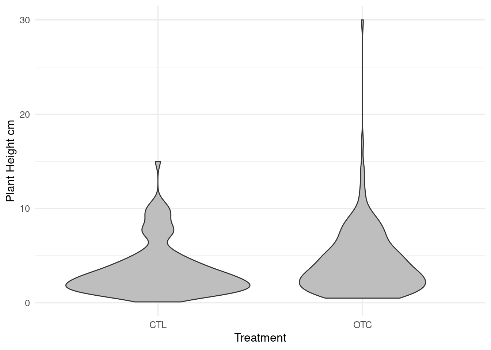

learn how to make cross-references to figure, tables, document sections etc.
Cross-referencing lets you refer to figures and tables in your document. Once set up, this happens automatically, so you don’t need to re-number all the figures when you add or delete one.
6.1 Cross-referencing figures and tables
The block that made the figure or table needs to have a label that starts with fig- or tbl-, respectively. The figure or table also need a caption.
```{r}#| label: fig-height-violin#| fig-cap: Violin plot of plant heights#| fig-alt: Violin plot of plant heights made with ggplot2#| warning: falsetrait_height |>ggplot(aes(x = Treatment, y = Value)) +geom_violin(fill ="grey") +labs(y ="Plant Height cm")```

Figure 6.1: Violin plot of plant heights
To cross-reference the figure made by the above chunk, we need to use this notation.
If you type an @@ in the visual editor it will make suggestion. If, in the visual editor, it does not show up in a smaller blue font, something has gone wrong. Delete it and make sure there is a space before the @@.
To refer to a table made by a block labelled tbl-traits-results, you would use
Plant traits are cool (@tbl-traits-results))
If you get the chunk name wrong, there will be a warning when the document in knitted, and question marks shown where the reference should be.
Non-existing (@fig-no-exist)
Non-existing (?fig-no-exist)
6.2 Cross-referencing equations
To cross-reference an equation, we need to give it a label.
You can also make cross-references to other sections of the document. First, you need to set up a identifier for the section you want to link to. In the visual editor, this can be done by clicking on the three dots to the right of the header (Figure 6.2) . The ID should start with #sec- and be in lower case (Figure 6.3). Now you can use this ID to make a link by typing @@.
Figure 6.2: Click on the three dots to get the Edit Attributes menu
Note that the reference must be written in lower case and spaces must be replaced by hyphens. Punctuation is deleted.
Source Code
```{r setup, include=FALSE}library(tidyverse)source("../Templates/biostats_theme.R")```# Cross-referencing {#sec-cross-referencing}```{r}#| label: data#| include: falsetraits <-read_delim("data/PFTC4_Svalbard_2018_ITEX_Traits.csv")# filter out height datatrait_height <- traits |>filter(Trait =="Plant_Height_cm") |>drop_na(Treatment)```::: callout-note## In this chapter, you will- learn how to make cross-references to figure, tables, document sections etc.:::Cross-referencing lets you refer to figures and tables in your document. Once set up, this happens automatically, so you don't need to re-number all the figures when you add or delete one.## Cross-referencing figures and tablesThe block that made the figure or table needs to have a label that starts with `fig-` or `tbl-`, respectively.The figure or table also need a caption.```{r}#| echo: fenced#| label: fig-height-violin#| fig-cap: Violin plot of plant heights#| fig-alt: Violin plot of plant heights made with ggplot2#| warning: falsetrait_height |>ggplot(aes(x = Treatment, y = Value)) +geom_violin(fill ="grey") +labs(y ="Plant Height cm")```To cross-reference the figure made by the above chunk, we need to use this notation.``` markdownPlant traits are cool (@fig-height-violin)```<div class="bg-success">Plant traits are cool (@fig-height-violin)</div>If you type an {{< kbd @ >}} in the visual editor it will make suggestion. If, in the visual editor, it does not show up in a smaller blue font, something has gone wrong. Delete it and make sure there is a space before the {{< kbd @ >}}.To refer to a table made by a block labelled `tbl-traits-results`, you would use``` markdownPlant traits are cool (@tbl-traits-results))```If you get the chunk name wrong, there will be a warning when the document in knitted, and question marks shown where the reference should be.``` markdownNon-existing (@fig-no-exist)```<div class="bg-success">Non-existing (@fig-no-exist)</div>## Cross-referencing equationsTo cross-reference an equation, we need to give it a label.``` markdown$$\frac{\sum_{i=1}^{n}{x_i}}{n}$${#eq-mean}```Now the label can be used.``` markdownThe mean (@eq-mean).```$$\frac{\sum_{i=1}^{n}{x_i}}{n}$$ {#eq-mean}<div class="bg-success">The mean (@eq-mean).</div>## Cross-referencing document sections {#sec-cross-referencing-document-sections}You can also make cross-references to other sections of the document. First, you need to set up a identifier for the section you want to link to.In the visual editor, this can be done by clicking on the three dots to the right of the header (@fig-three-dots) .The ID should start with `#sec-` and be in lower case (@fig-edit-attributes). Now you can use this ID to make a link by typing {{< kbd @ >}}.```{r}#| label: fig-three-dots#| echo: false#| out-width: "80%"#| fig-cap: Click on the three dots to get the Edit Attributes menu#| fig-alt: Screenshot of the three dots that get the Edit Attributes menuknitr::include_graphics("Pics/three-dots.png")``````{r}#| label: fig-edit-attributes#| echo: false#| out-width: "50%"#| fig-cap: The Edit Attributes menu#| fig-alt: Screenshot of the Edit Attributes menuknitr::include_graphics("Pics/edit-attributes.png")```In the source editor, it will look like this.``` markdown## Cross-referencing document sections {#sec-cross-referencing-document-sections}Cross-referencing (@sec-cross-referencing-document-sections)```<div class="bg-success">Cross-referencing (@sec-cross-referencing-document-sections)</div>Note that the reference must be written in lower case and spaces must be replaced by hyphens. Punctuation is deleted.